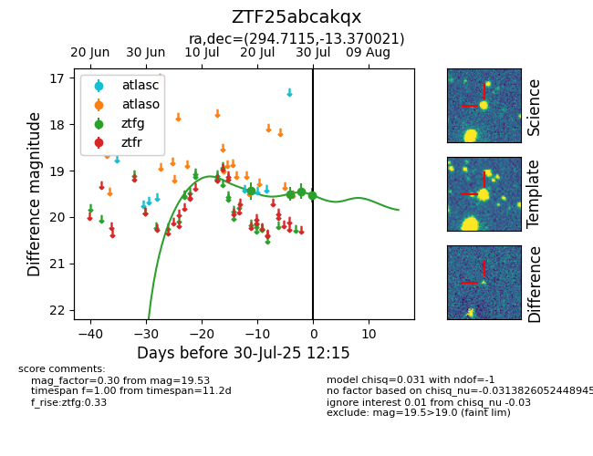

Target ZTF25abcakqx at 2025-07-30 12:15, see:
FINK: fink-portal.org/ZTF25abcakqx
Lasair: lasair-ztf.lsst.ac.uk/objects/ZTF25abcakqx
ALeRCE: alerce.online/object/ZTF25abcakqx
alt names
ZTF25abcakqx (ztf,fink)
coordinates:
equatorial (ra, dec) = (294.7115,-13.37002)
galactic (l, b) = (26.0638,-16.45589)
photometry
last ztfg=19.53
4 ztfg detections
